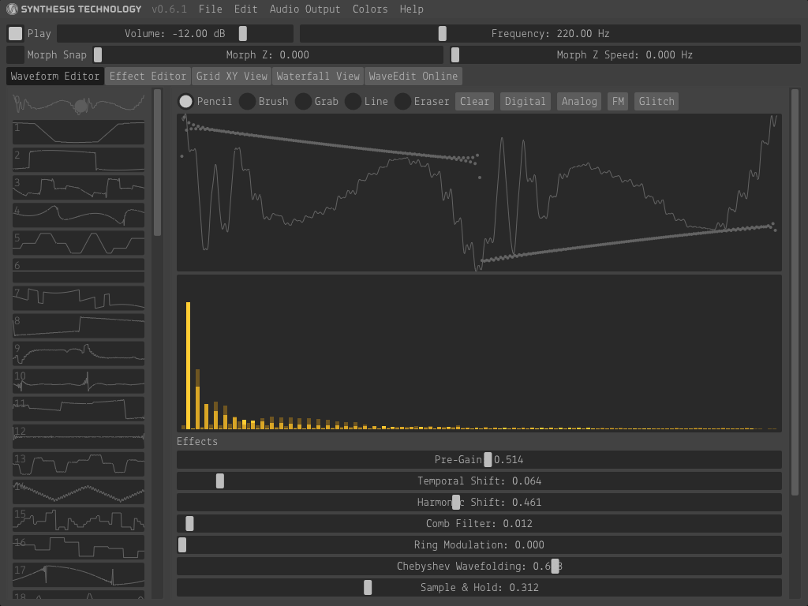

WaveEdit is a cross-platform (Mac/Windows/Linux) wavetable and bank editor designed for the Synthesis Technology E370 Quad Morphing VCO and E352 Cloud Terrarium VCO Eurorack synthesizer modules.
WaveEdit is available for download at http://synthtech.com/waveedit.

In WaveEdit and the Synthesis Technology E370 and E352 modules, you can load a bank of wavetables and morph/interpolate between them as they cycle at a particular frequency.
In Z mode, all 64 wavetables are positioned on a line, and the Z parameter smoothly interpolates wavetables near its value. In XY mode, the wavetables are positioned on an 8x8 grid and interpolated in 2D.
There are several methods for creating a bank of wavetables. You may combine any of these methods in unique ways to create your own banks.
Once you are satisfied with your bank using the bank visualization pages or audio preview, you can save it as a WAV file and load it by the E370 and E352 VCOs with a microSD card. You can share your favorite banks by submitting them to the WaveEdit Online database.
| Key Command | Mac | Windows / Linux |
|---|---|---|
| New Bank | Cmd+N | Ctrl+N |
| Open Bank | Cmd+O | Ctrl+O |
| Save Bank | Cmd+S | Ctrl+S |
| Save Bank As | Cmd+Shift+S | Ctrl+Shift+S |
| Import Audio | Cmd+I | Ctrl+I |
| Quit | Cmd+Q | Ctrl+Q |
| Undo | Cmd+Z | Ctrl+Z |
| Redo | Cmd+Shift+Z | Ctrl+Shift+Z |
| Copy Wave | Cmd+C | Ctrl+C |
| Cut Wave | Cmd+X | Ctrl+X |
| Paste Wave | Cmd+V | Ctrl+V |
| Clear Wave | Delete/Backspace | Delete |
| Randomize Effects | R | R |
| Toggle Preview Audio | Space | Space |
| Waveform Editor | 1 | 1 |
| Effect Editor | 2 | 2 |
| Grid XY View | 3 | 3 |
| Waterfall View | 4 | 4 |
| WaveEdit Online | 5 | 5 |